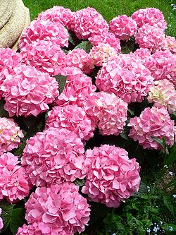
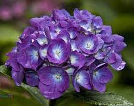

Las hortensias son plantas del genero hydrangea, cuya mayoría se presentas en forma de arbusto. Estas pueden llegar a medir hasta 3 m de alto, aunque hay otras que se presenta en forma de liana que pueden llegar a alcanzar los 30 m. La mayoría de las hortensias provienen de Asia, en específico, Japón, china o corea, aunque también pueden ser encontradas en Sudamérica
El género Hydrangea incluye plantas ornamentales, comúnmente conocidas como hortensias, nativas del sur y el este de Asia2 (concretamente de China, Japón, Corea, el Himalaya e Indonesia) y de América. La mayor diversidad de especies de este género se encuentra en las zonas de China, Japón y Corea. La mayoría son arbustos de entre uno y tres metros de altura, algunas son árboles pequeños y otras son lianas que pueden alcanzar los treinta metros trepando por los árboles. Pueden ser de hoja caduca o de hoja perenne, no obstante las más ampliamente cultivadas, que son especies de climas templados, son de hoja caduca. Comprende 201 especies descritas y de estas, solo 43 aceptadas.3
ORIGEN DE LAS HORTENSIAS Las hortensias que se encuentran en las floristerías vienen originalmente de Asia y de América del Sur. Como dato curioso: el nombre Hortensia o Hydrangea proviene de "hidro" (agua) y 'angeion' (vaso), porque la forma de la hortensia recuerda a un antiguo envase para portar agua
La hortensia es un arbusto vivaz de hasta 1,5 m de altura, cuando se cultiva en el suelo, y de unos 60 cm, cuando se cultiva en contenedores o macetas.
volver a inicio